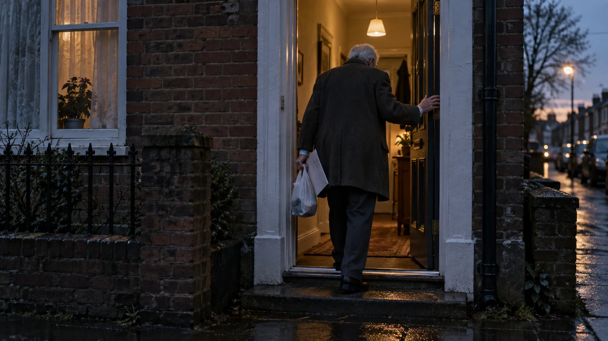
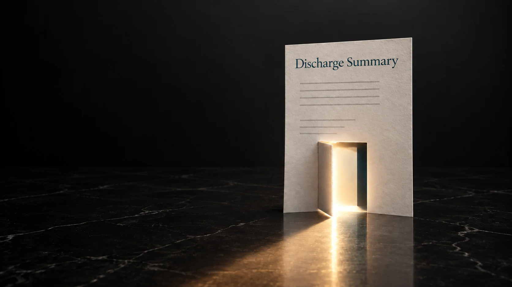
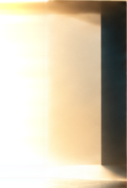
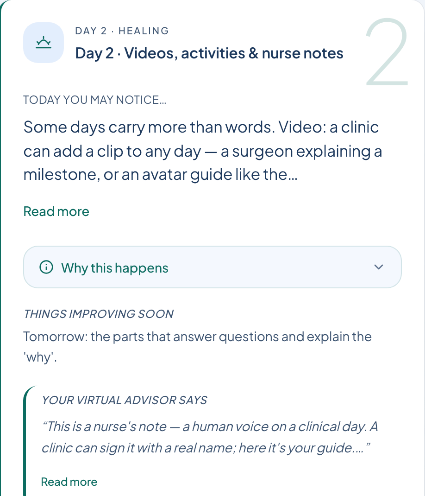
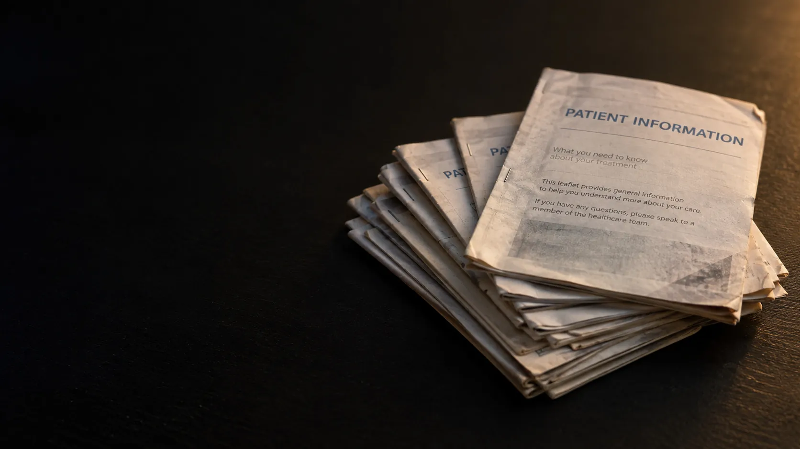
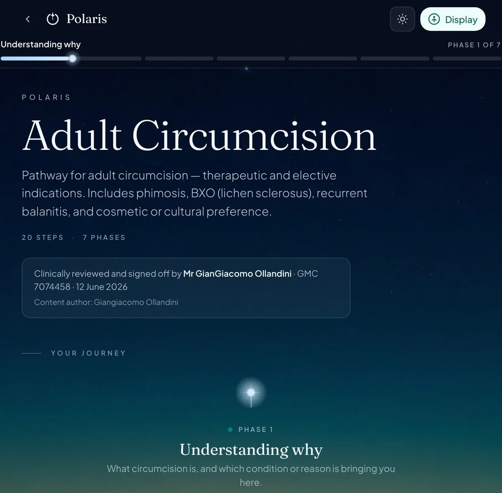

An illustrative image. Not a real patient.



A door that
stays open.
Recovery information, arranged around the days ahead. Something to return to when the next question arrives.
Actual demonstration content, not a live app or patient record.

Before the operation
The conversation
that matters most.
Is a pile of fading photocopies the best support we can offer for the conversation that carries the most weight, ethically and legally, before a life-changing event?
Do we leave someone alone with old paper, or searching an AI chatbot for answers to questions they may not know to ask?
Show me another way Or test your own leaflet firstAn illustrative image. It does not depict any organisation’s actual materials.

A way to prepare.
A place to return.
Information before the procedure, arranged as a pathway, in standard and Easy Read forms. Something to revisit, and to bring questions back to the clinical team.
Actual demonstration content, not a live app or patient record.
Behind the words
Behind the words,
someone stands.
Hold the page up to the light.
See the work behind it.
Reliable sources.
Clinical references remain attached to the information. The evidence behind a statement can be found and reviewed.
Reliable sources.
Auditable clinical review.
Accountability for every single word.
The Helm is where clinicians prepare, review and approve the information behind the patient experience. AI can help prepare a draft. Clinical approval remains human.
Polaris supports preparation before the procedure, with standard and Easy Read options.
- No patient log-in. Patients open a link. The Suite holds no patient accounts and no directly identifying patient information.
- Standard and Easy Read, together. Every step is prepared in both forms. A figure present in one and missing from the other blocks sign-off.
- The link stays current. A patient’s link opens the published pathway as it stands today, not a saved copy.
- Figures carry their source. A risk figure names where it comes from, and can be shown as people out of 100.
What could this look like
for your patients?
One consultant. One procedure.
A 20-minute conversation.
For consultant surgeons
Start the conversationA 90-day guided trial with clinical review. Opens the pilot page; no meeting is booked until agreed.
For managers and teams
Send this to a consultant